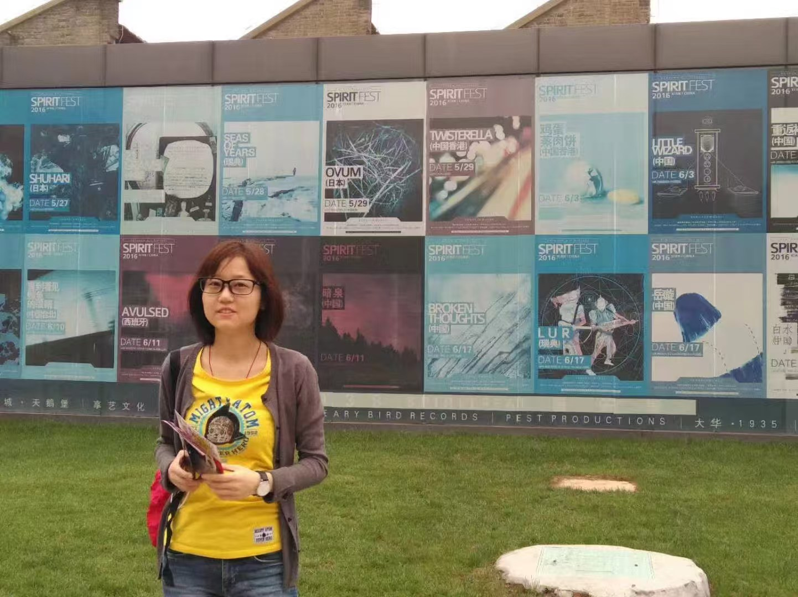

FIELD AA↗
AI Research AI 研究
Researching and building intelligent systems for scientific discovery.研究并构建服务于科学发现的智能系统。
- 01
自进化因子挖掘智能体
因子生成 · 自动评估 · 迭代进化
- 02
LNPAgent:LNP发现智能体
智能体 · LNP 发现 · 研究自动化
RESEARCHER · BUILDER · OBSERVER
A personal field of work, inquiry, and observation.为研究与发现构建智能系统；也思考市场，以及模型解释不了的真实生活。
02
I study how models learn to judge, how markets absorb information, and how to keep a rhythm of my own in a world that accelerates.我观察模型怎样学会判断，市场怎样消化信息，也在不断加速的世界里，学习如何保持自己的节奏。
Researching and building intelligent systems for scientific discovery.研究并构建服务于科学发现的智能系统。
因子生成 · 自动评估 · 迭代进化
智能体 · LNP 发现 · 研究自动化
A personal practice in systematic investing — from hypothesis and backtest to execution.从假设、回测到执行：关于系统化个人投资的实践学习。
RESEARCH-LED NOTES
LIFE IN BETWEEN
Research-led notes, with life in between.以研究为主线，也记录生活的片段。
AIMusic, sport, travel, and the observations that keep the work honest.音乐、运动、旅行，以及让研究保持真实的细小观察。
Enter life notes / 生活记录 ↗
05 / LET'S CONNECT
Research, collaboration, or a good question.研究、合作，或一个值得认真讨论的问题。